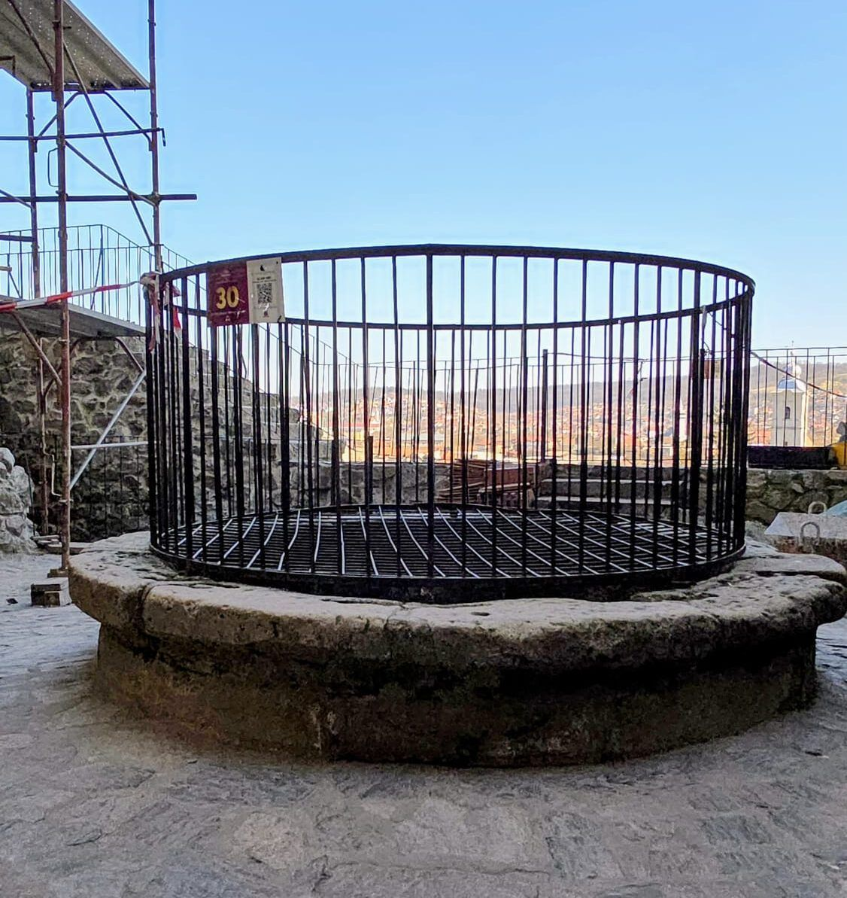

Journey 02 · Hunedoara Note 2 of 12 Stories of
Stories of Romania: The Well of the Three Prisoners

A fost odată ca niciodată, there was once, as never before, a castle on a hill deep in the Kingdom of Hungary, where today stands a castle in Romania made of stone and brick, wood and legend.
Că dacă n-ar fi, nu s-ar povesti – and if it were not so it would never be told, that long before tourists crossed a wooden bridge, three prisoners were brought to Corvin Castle.
Three Ottoman prisoners were offered a strange bargain by John Hunyadi. They could be executed, or they could dig.
My home has no fresh water, said John to the prisoners, and I am in need of strong men who will work. If you dig me a well that reaches fresh water, I will set you free.
The prisoners agreed because after all, with the three of them together, the hole would surely be dug quickly, and they would be free to return to their wives and children. But when John Hunyadi brought them to Corvin Castle, they saw that the castle was built not on dirt or even hard clay, but the hard stone of the mountain.
The task seemed impossible. The courtyard was solid stone, and the castle itself stood high above the surrounding land. But the prisoners began digging anyway. Day after day they worked, carving slowly into the rock beneath the castle.
Years passed.
The men chipped away at the stone with simple tools, lowering themselves deeper and deeper into the earth. 5 meters. Then 10. The men’s backs were bent, their hair long and greying.
More years passed.
15 meters, 20…Eventually the hole became a well, dropping farther below the castle walls than anyone could easily see from above. Still the prisoners dug, because their freedom lay at the bottom of the hole.
After 14 years, John Hunyadi died. Perhaps the prisoners mourned. Perhaps they did not. Only the stones and the darkness know the answer to that.
After 15 years, the sound of their tools changed. They had hit water, after 15 years and 28 meters. At the bottom of a hole nearly 100 feet deep from the courtyard stones, perhaps the men cheered and hugged each other. Perhaps they cried. Perhaps they were so old and broken they did neither. Only the stones and the darkness know the answer to that.
The prisoners returned to the surface, and presented themselves to Elisabeth, the wife of John Hunyadi, the man who promised them their freedom in exchange for water. The well is dug, they might have said. We have dug through stone and time for 15 years, and now we request our freedom.
But Elisabeth looked at the prisoners. These men from a strange land, soldiers her husband had brought from the battlefield long ago, who after so long were no strangers to the castle, her home and her stronghold. After 15 years, they knew every guard shift, every weakness, every pattern of everyday life. Dirty and old now, yes. But who can know how much they had seen… and how much they would say?
And so, the promise was broken.
Before they were to be executed, the men were granted the right to carve their name into the well they had broken stone and bone for. They were granted their wish, and executed after.
Today only one name can be seen on the stones, Hassan.
But, the story says that perhaps instead of a name, what the prisoners left behind was a curse for a broken promise.
You may have water, but you have no soul.
But who is to say what is carved into the well so deep in the earth? Only the stones and the darkness know the answer to that.
Today the well is still there in the courtyard of Corvin Castle. It plunges roughly twenty-eight meters into the earth (more than 90 feet), a deep circular well cut into the stone floor where the prisoners once worked.
The well looks like… well, a well. A neat stack of rocks, a deep dark hole that seems to have no bottom. If the construction equipment were not nearby, it would likely look now as it looked then.
Whether the story about the well is true or not?
Perhaps like many medieval legends, the tale of the three prisoners probably grew over time. But someone dug the well through solid stone. And someone spent a very long time to do it.
Was it only three Ottoman prisoners who dug the well? Were they promised their freedom in exchange for water? Did they leave a lingering curse for a broken promise?
Only the stones and the darkness know the answer to that.
Originally published at fieldnotesfromabroad.com/2026/03/09/stories-of-romania/